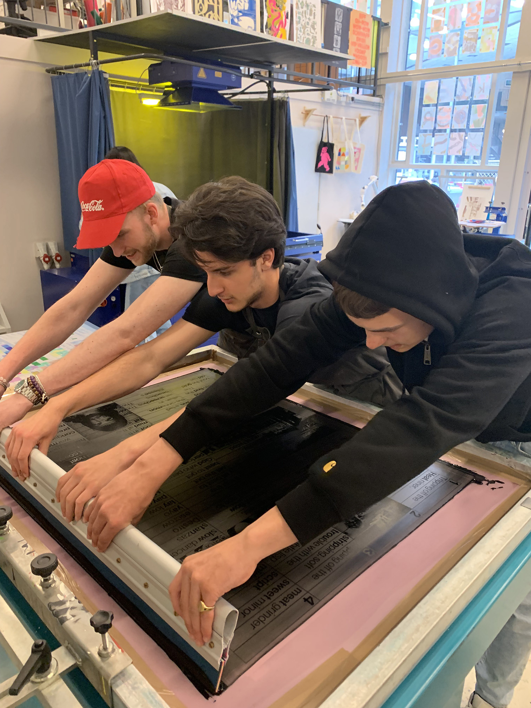
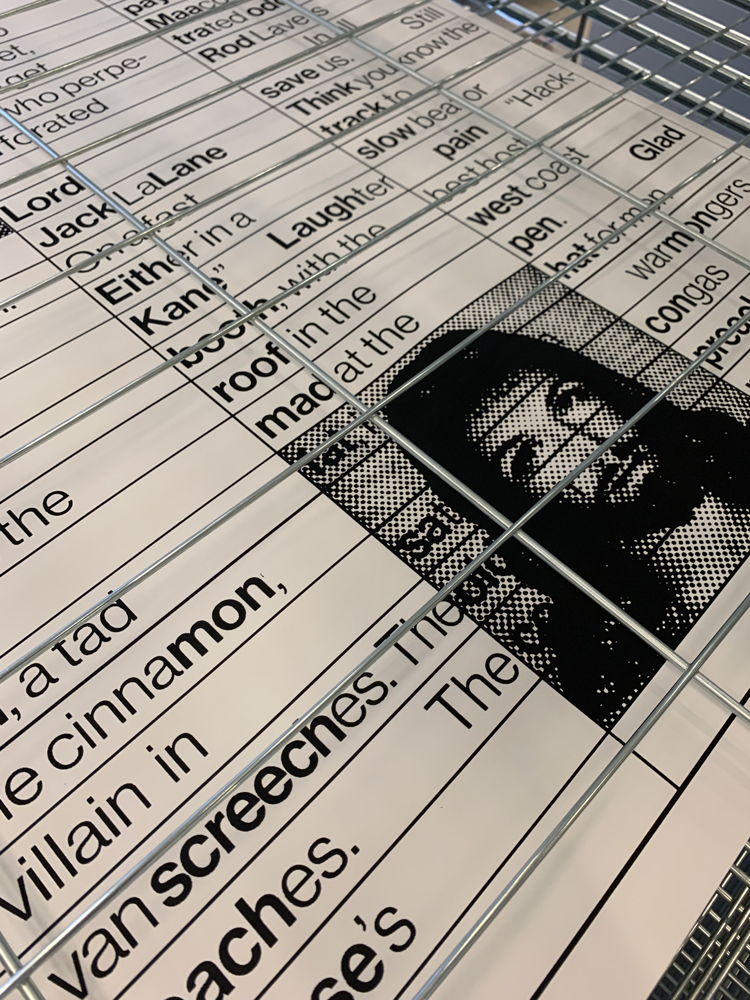
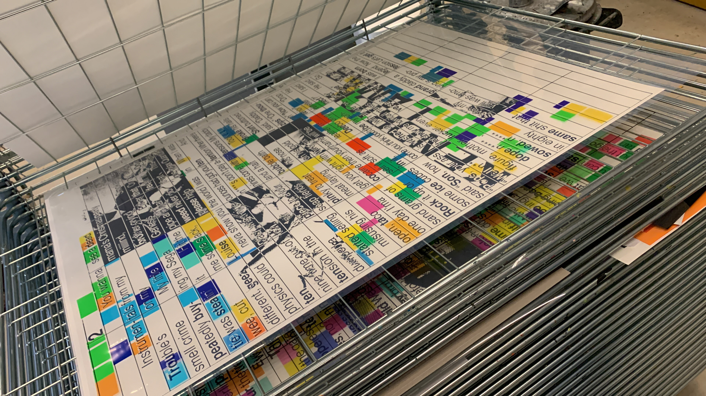
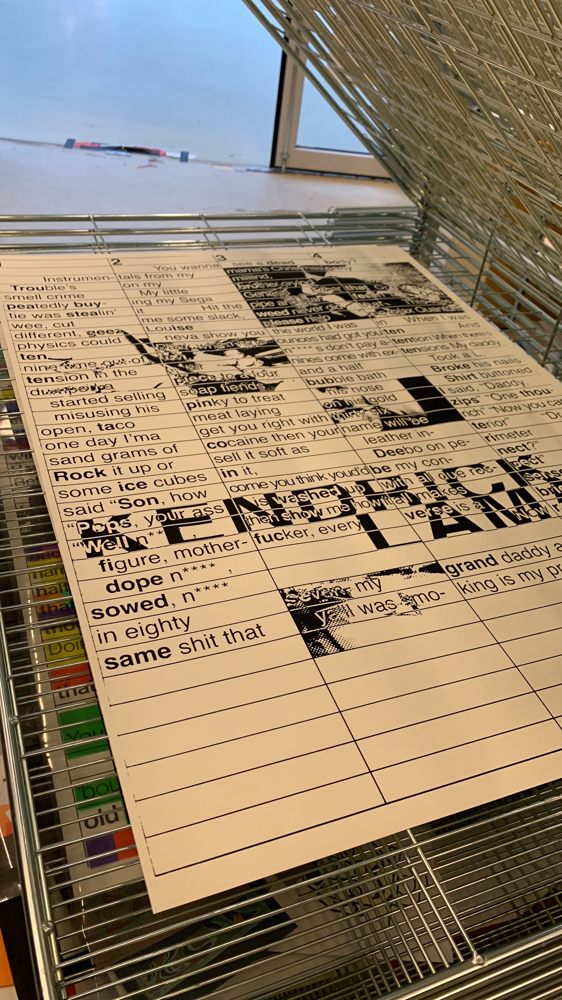
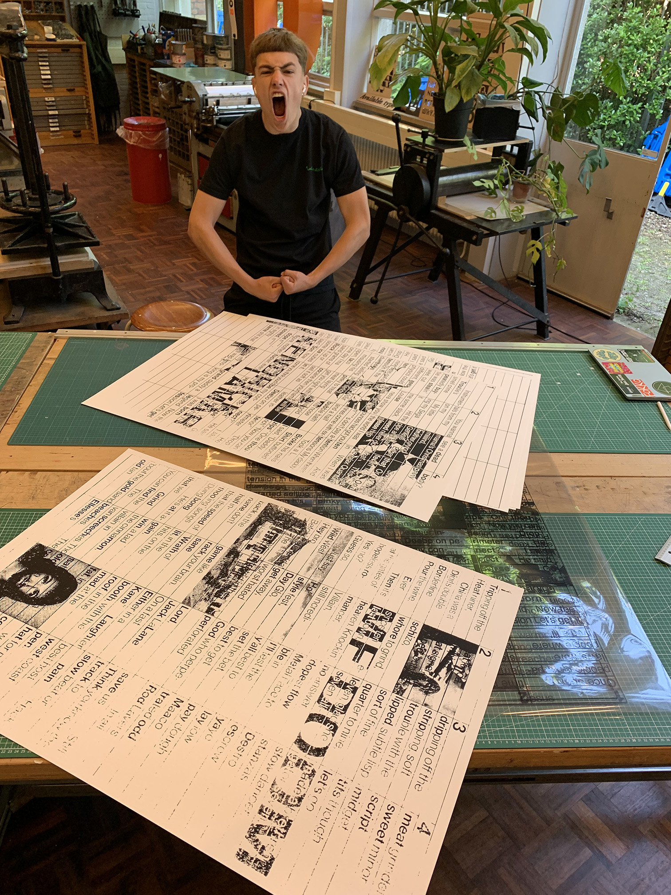
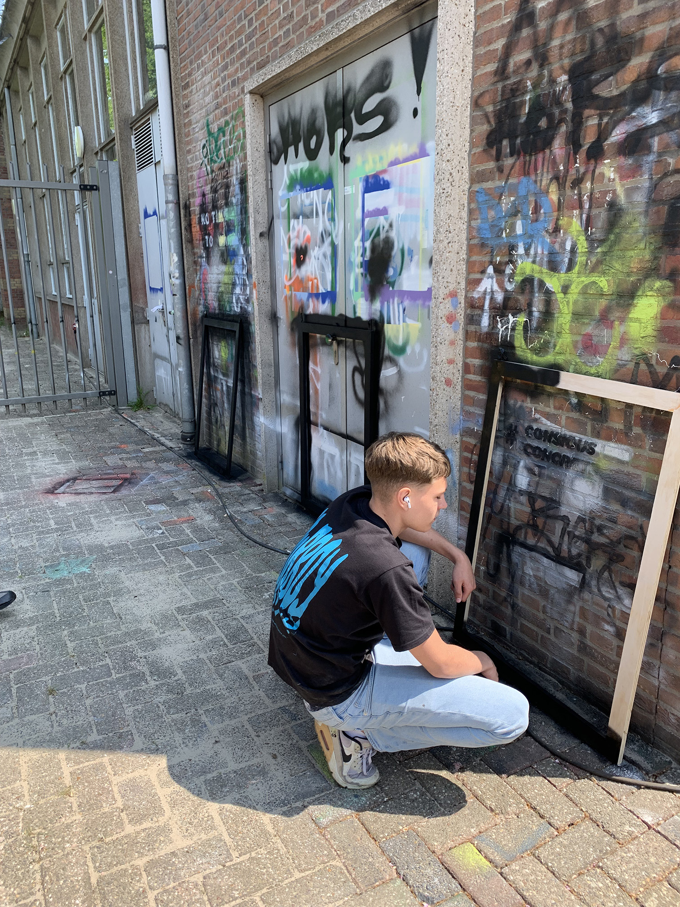
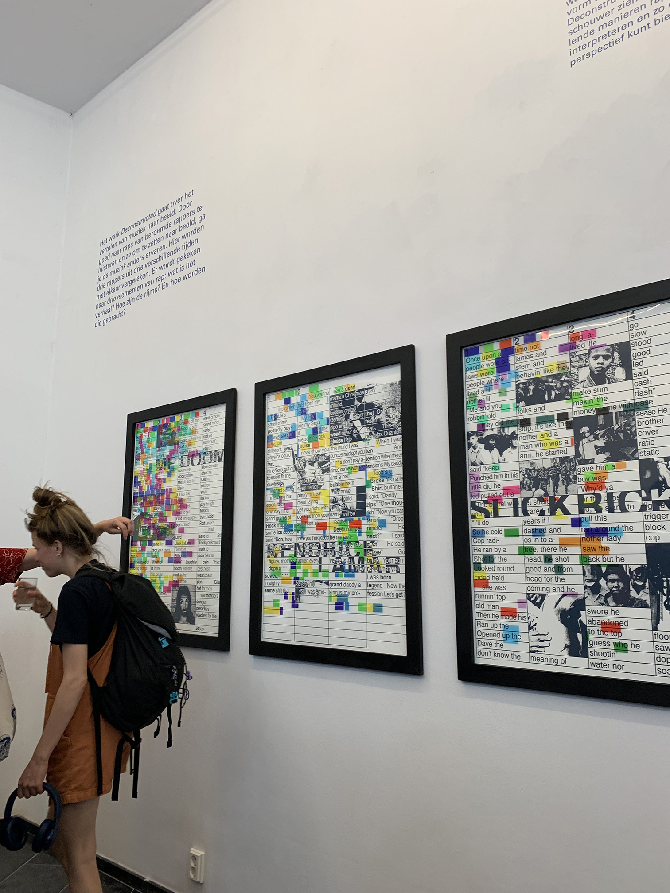

In 'Deconstructed' Nanne Nauta, Boaz Blom and myself demonstrate how to interpret things in a graphical manner. In
this case, rap lyrics. It naturally doesn't evoke the same feeling as the original songs did. However, it's always
interesting to look at something anew from a different perspective. At the same time, we provide
insights into various rap lyrics, which might help you understand what makes certain lyrics so
good and, in turn, potentially foster a greater appreciation for rap. We believe that through
this work, you'll gain a better understanding of two creative realms: both rap and graphic design.
In this work, we have divided rap into three elements: flow, content, and delivery. From these three
elements, we analyze the rap lyrics. Flow represents rhyme and wordplay. Content signifies the story
that the rapper tells. Delivery refers to the rhythm and emotion in the pronunciation of the text.
We compare three different rappers from three different time periods. These rappers each have their
own strengths, which are also reflected in the visual translations.








